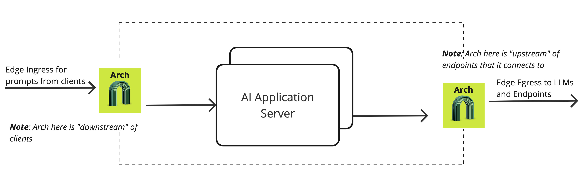

Life of a Request#
Below we describe the events in the life of a request passing through an Arch gateway instance. We first describe how Arch fits into the request path and then the internal events that take place following the arrival of a request at Arch from downtream clients. We follow the request until the corresponding dispatch upstream and the response path.
{kind=link}
Terminology#
We recommend that you get familiar with some of the terminology used in Arch before reading this section.
Network topology#
How a request flows through the components in a network (including Arch) depends on the network’s topology. Arch can be used in a wide variety of networking topologies. We focus on the inner operation of Arch below, but briefly we address how Arch relates to the rest of the network in this section.
Downstream(Ingress) listeners take requests from upstream clients like a web UI or clients that forward prompts to you local application responses from the application flow back through Arch to the downstream.
Upstream(Egress) listeners take requests from the application and forward them to LLMs.
In practice, Arch can be deployed on the edge and as an internal load balancer between AI agents. A request path may traverse multiple Arch gateways:

High level architecture#
Arch is a set of two self-contained processes that are designed to run alongside your application servers (or on a separate server connected to your application servers via a network). The first process is designated to manage HTTP-level networking and connection management concerns (protocol management, request id generation, header sanitization, etc.), and the other process is for model serving, which helps Arch make intelligent decisions about the incoming prompts. The model server hosts the purpose-built LLMs to manage several critical, but undifferentiated, prompt related tasks on behalf of developers.
The request processing path in Arch has three main parts:
Listener subsystem which handles downstream and upstream request processing. It is responsible for managing the downstream (ingress) and the upstream (egress) request lifecycle. The downstream and upstream HTTP/2 codec lives here.
Prompt handler subsystem which is responsible for selecting and forwarding prompts
prompt_targetsand establishes the lifecycle of any upstream connection to a hosted endpoint that implements domain-specific business logic for incoming promots. This is where knowledge of targets and endpoint health, load balancing and connection pooling exists.Model serving subsystem which helps Arch make intelligent decisions about the incoming prompts. The model server is designed to call the purpose-built LLMs in Arch.
The three subsystems are bridged with either the HTTP router filter, and the cluster manager subsystems of Envoy.
Also, Arch utilizes Envoy event-based thread model. A main thread is responsible forthe server lifecycle, configuration processing, stats, etc. and some number of worker threads process requests. All threads operate around an event loop (libevent) and any given downstream TCP connection will be handled by exactly one worker thread for its lifetime. Each worker thread maintains its own pool of TCP connections to upstream endpoints.
Worker threads rarely share state and operate in a trivially parallel fashion. This threading model enables scaling to very high core count CPUs.
Configuration#
Today, only support a static bootstrap configuration file for simplicity today:
version: "0.1-beta"
listener:
address: 127.0.0.1 | 0.0.0.0
port_value: 8080 #If you configure port 443, you'll need to update the listener with tls_certificates
messages: tuple | hugging-face-messages-api
system_prompts:
- name: network_assistant
content: You are a network assistant that just offers facts about the operational health of the network
llm_providers:
- name: "OpenAI"
access_key: $OPEN_AI_KEY
model: gpt-4o
default: true
- name: "Mistral"
access_key: $MISTRAL_KEY
model: mixtral8-7B
prompt_endpoints:
- "http://127.0.0.2"
- "http://127.0.0.1"
prompt_guards:
input-guard:
- name: #jailbreak
on-exception-message: Looks like you are curious about my abilities. But I can only
prompt_targets:
- name: information_extraction
type: RAG
description: this prompt handles all information extractions scenarios
path: /agent/summary
- name: reboot_network_device
path: /agent/action
description: used to help network operators with perform device operations like rebooting a device.
parameters:
error_target: #handle errors from Bolt or upstream LLMs
name: “error_handler”
path: /errors
Request Flow (Ingress)#
Overview#
A brief outline of the life cycle of a request and response using the example configuration above:
TCP Connection Establishment: A TCP connection from downstream is accepted by an Arch listener running on a worker thread. The listener filter chain provides SNI and other pre-TLS information. The transport socket, typically TLS, decrypts incoming data for processing.
Prompt Guardrails Check: Arch first checks the incoming prompts for guardrails such as jailbreak attempts. This ensures that harmful or unwanted behaviors are detected early in the request processing pipeline.
Intent Matching: The decrypted data stream is deframed by the HTTP/2 codec in Arch’s HTTP connection manager. Arch performs intent matching via is prompt-handler subsystem using the name and description of the defined prompt targets, determining which endpoint should handle the prompt.
Parameter Gathering with Arch-FC: If a prompt target requires specific parameters, Arch engages Arch-FC to extract the necessary details from the incoming prompt(s). This process gathers the critical information needed for downstream API calls.
API Call Execution: Arch routes the prompt to the appropriate backend API or function call. If an endpoint cluster is identified, load balancing is performed, circuit breakers are checked, and the request is proxied to the upstream endpoint.
Default Summarization by Upstream LLM: By default, if no specific endpoint processing is needed, the prompt is sent to an upstream LLM for summarization. This ensures that responses are concise and relevant, enhancing user experience in RAG (Retrieval-Augmented Generation) and agentic applications.
Error Handling and Forwarding: Errors encountered during processing, such as failed function calls or guardrail detections, are forwarded to designated error targets. Error details are communicated through specific headers to the application:
X-Function-Error-Code: Code indicating the type of function call error.X-Prompt-Guard-Error-Code: Code specifying violations detected by prompt guardrails.Additional headers carry messages and timestamps to aid in debugging and logging.
Response Handling: The upstream endpoint’s TLS transport socket encrypts the response, which is then proxied back downstream. Responses pass through HTTP filters in reverse order, ensuring any necessary processing or modification before final delivery.
Request Flow (Egress)#
Overview#
A brief outline of the life cycle of a request and response in the context of egress traffic from an application to Large Language Models (LLMs) via Arch:
HTTP Connection Establishment to LLM: Arch initiates an HTTP connection to the upstream LLM service. This connection is handled by Arch’s egress listener running on a worker thread. The connection typically uses a secure transport protocol such as HTTPS, ensuring the prompt data is encrypted before being sent to the LLM service.
Rate Limiting: Before sending the request to the LLM, Arch applies rate-limiting policies to ensure that the upstream LLM service is not overwhelmed by excessive traffic. Rate limits are enforced per client or service, ensuring fair usage and preventing accidental or malicious overload. If the rate limit is exceeded, Arch may return an appropriate HTTP error (e.g., 429 Too Many Requests) without sending the prompt to the LLM.
Load Balancing to (hosted) LLM Endpoints: After passing the rate-limiting checks, Arch routes the prompt to the appropriate LLM endpoint. If multiple LLM providers instances are available, load balancing is performed to distribute traffic evenly across the instances. Arch checks the health of the LLM endpoints using circuit breakers and health checks, ensuring that the prompt is only routed to a healthy, responsive instance.
Response Reception and Forwarding: Once the LLM processes the prompt, Arch receives the response from the LLM service. The response is typically a generated text, completion, or summarization. Upon reception, Arch decrypts (if necessary) and handles the response, passing it through any egress processing pipeline defined by the application, such as logging or additional response filtering.
Post-request processing#
Once a request completes, the stream is destroyed. The following also takes places:
The post-request monitoring are updated (e.g. timing, active requests, upgrades, health checks). Some statistics are updated earlier however, during request processing. Stats are batchedand written by the main thread periodically.
Access logs are written to the access log
Trace spans are finalized. If our example request was traced, a trace span, describing the duration and details of the request would be created by the HCM when processing request headers and then finalized by the HCM during post-request processing.